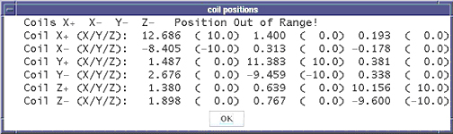
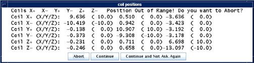
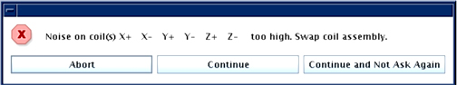

Operating Documentation
Direction 5440000, Rev# 5
Signa HDxt Service Methods
Module Version 4.0, Version Date 10/25/10
Operating Documentation |
There are several mechanisms in place to ensure the proper operation of the Grafidy fixture. Automatic prescan checks the signal level from all six channels and reports an error if any are low. It also reports an error in the Error Log if the transmit gain (TG) could not be set properly. In addition, the Grafidy tool checks the signal from all six channels after collecting eddy current data using the long or DC mode. With this data it verifies several signal characteristics:
Coil position.
Relative signal intensities of the initial points in the magnitude signal as a function of time.
SNR of the resulting magnetic field data.
If any of these characteristics are found to be incorrect, an error is presented to the user and written to the error log.
When troubleshooting the Grafidy tool, it is often useful to observe the signals in the Manual Prescan page. Changing from the Service View to the Scan View allows access the Manual Prescan page. Assuming that the Grafidy software is running and a scan has been completed, the proper protocol will be loaded. In order for the Manual Prescan window to display the signals correctly, perform the following steps:
Right-click on the [Research Options] button at the bottom of the screen. A list of options will be presented.
Select [Setup Params]. A popup window will be presented (see Illustration 1).
Edit the following values in the text boxes provided in the upper right corner of the window.
Number of frames: 4
Window one: Frame: 1 Frame: 0
Window two: Frame: 3 Frame: 0
Select the [Done] button to dismiss the window.
Illustration 1: Setup Parameters Window

Selecting the [Manual Prescan] button in the Scan View will bring up the Manual Prescan window and begin data collection and display in CFL (Center Frequency Coarse) mode. As shown in Illustration 2, the "Rec" slider bar determines which channel is displayed in the data window. Data from all six channels may be viewed one at a time.
Illustration 2: Manual Prescan Window

Only a few failure modes may be addressed in the field. Only one subcomponent of the Grafidy fixture are designated as field replaceable units (FRU). This is the RF coil assembly, which includes the RF coil, sample, RF tune board and the plastic shell. The fixture design accommodates easy exchange of these assemblies.
| ||||
| The T/R Board, Mechanical Fixture, RF Coil Cables and Hypertronics Cable are not FRUs. If any of these subcomponents are damaged, the entire fixture must be returned for repair. In addition, the Grafidy tool is not designed to work with less than 6 functioning coils. An extra coil is provided with each kit. | ||||
Below is a list of many of the error conditions that may occur when using the Grafidy tool. The Manual Prescan page may then be brought up (see Section 2) to more fully characterize the problem.
| NOTE: | The same error messages show up in the auto and manual modes. The only difference is that in the auto mode, there are three alternatives presented to the Field Engineer namely “Abort”, “Continue” or “Continue without asking again”. |
If any of the samples are greater than 1.5cm from their ideal location in the bore, an error will be presented along with the measured X, Y and Z coordinates of the coil pair. For example, the +Y (upper) coil has an ideal location of (0, 10, 0). The actions depend on the direction of the error. Note that for the LCC magnet, when facing the bore at the patient end of the magnet, +X is left, +Y is up, and +Z is toward the LPCA.
If the fixture is off along the X-axis, first verify if the right-left laser alignment light lies along the center (sagittal) plate. If not, adjust the fixture so that it does. If it does, verify that the laser alignment light is properly configured. If it is not, adjust it and repeat the landmark on the fixture. If it is, as a last resort slide the fixture left or right the approximate distance that the tool reported that the coil was off along the X axis. An example is shown inIllustration 3 and Illustration 4.
Illustration 3: X-Fixture Is Off Position (Manual Mode)

Illustration 4: X-Fixture Is Off Position In Auto Mode

If there are failures with the Y-axis, this implies that either the Grafidy fixture is not properly placed on the cradle, or the bridge height is incorrect. Verify that the fixture is properly set on the cradle per the Grafidy set-up. The bridge height should not need adjusting, as it is set at the factory. If the bridge height cannot be adjusted and the fixture is still too low and the error shown inIllustration 5 andIllustration 6 are seen, prop the fixture on a secure riser. There is not an adjustment provided to lower the position of the fixture along the Y-axis. An example of this is shown inIllustration 5 and Illustration 6.
Illustration 5: Y-Fixture Is Off Position In Manual Mode

Illustration 6: Y-Fixture is off position in auto mode

If the fixture is off along the Z-axis, first verify if the back-front laser alignment light lies along the wing (axial) plates. If not, move the fixture so that it does. If it does, verify that the laser alignment light and the Z-isocenter calibration are properly configured. If it is not, adjust it and repeat the landmark on the fixture. If it is, as a last resort slide the fixture in or out of the bore the approximate distance that the tool reported that the coil was off along the Z-axis. An example of this is shown in Illustration 5.
Illustration 7: Z-Fixture Is Off Position In Manual Mode

Illustration 8: Z-Fixture Is Off Position In Auto Mode

There can be several causes of no signal from any channel. Below is a list of recommended steps to take.
An example of the message that may appear is shown in Illustration 6.
Illustration 9: No Signal From Any Channel

Verify that the display configuration in the Manual Prescan page (Setup Params) is correct (refer to Section 2).
Verify that the fixture is plugged into the 'A' connector on the LPCA and that the green coil ID light is on.
Verify that all pins in the Hypertronics connector are straight (not bent).
Run the MCR tool to verify proper operation of the receive chain.
If possible, plug another coil into the 'A' port (a Tx/Rx coil such as the 8-channel knee coil is preferred) to verify proper operation of the transmit chain and 'A' connector in the LPCA.
Return the fixture for repair.
There can be several causes of no signal from a single channel. Below is a list of recommended steps to take.
Illustration 10 gives an example of the message that may appear.
Illustration 10: No / Low Signal From One Channel

Run the MCR tool to verify proper operation of the receive chain.
Exchange RF coil assemblies with another in the fixture or a FRU and repeat the data collection. Note that Channel 1=+X, 2=-X, 3=+Y, 4=-Y, 5=+Z, 6=-Z.
If possible, plug another coil into the 'A' port to verify proper operation of the 'A' connector in the LPCA.
Return the fixture for repair.
There can be several causes that produce errors when setting the TG value. Below is a list of recommended steps to take.
Verify that the fixture is plugged into the 'A' connector on the LPCA and that the green coil ID light is on.
Run Auto Prescan from the Manual Prescan page. Verify that the error still occurs or the TG value is set to 190 (indicating the 90 degree flip was not achieved) as shown in Illustration 11.
If possible, plug another coil into the 'A' port (a Tx/Rx coil such as the 8-channel knee coil is preferred) to verify proper operation of the transmit chain and 'A' connector in the LPCA.
Reboot the software to verify that the scan configuration is correct (CVs in the pulse sequence, prescan configuration, etc.)
Return the fixture for repair.
Illustration 11: TG Going Too High

The Grafidy tool has been designed such that the shortest time between RF pulses is long enough to allow sufficient time for the sample spins to relax. If an error message is presented that states that the peak-to-peak variation in initial magnitudes is too large, repeat the experiment to verify the result. If it occurs again, replace the RF coil assembly.
Illustration 12: Example Of A Situation In Which An Error Message Is Presented That Indicates That The Peak-To-Peak Variation In Initial Magnitudes Is Too Large

The Grafidy tool has been designed such that the data acquisition length, receiver bandwidth and sample size provides sufficient SNR. If an error message is presented that states that the field data is too noisy, first verify that prescan ran correctly. Then, repeat the experiment to verify the result. If it occurs again, replace the RF coil assembly that the tool reported as bad.
Illustration 13: Noise Too Large In The Field Data In The Manual Mode

Illustration 14: Noise Too Large In The Field Data In Auto Mode

Problem: For an S5 magnet, Grafidy3 achieves calibration, but when it is re-run later, VLong is out of tolerance. The cause may be insufficient time delay between iterations (scans), preventing eddy current from settling.
Solution: Calibrate very long (VLong) eddy current in manual mode. Stay in one axis (e.g., vlong X axis) until it is done (this may take a few iterations) before moving to the next axis. Between iterations (scans), wait a few minutes (~2 minutes) before clicking [Scan] again. When the scan finishes and the popup comes up for the last scan, click [Cancel] instead of [Accept].